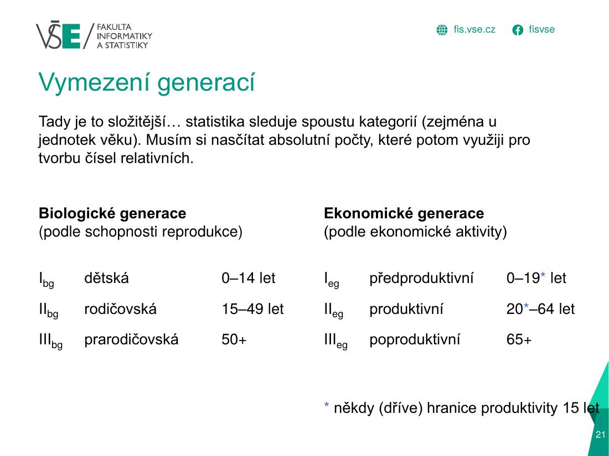
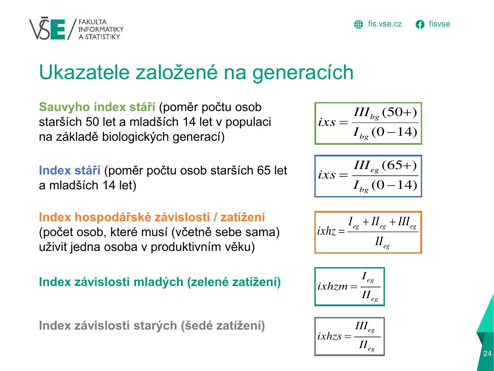
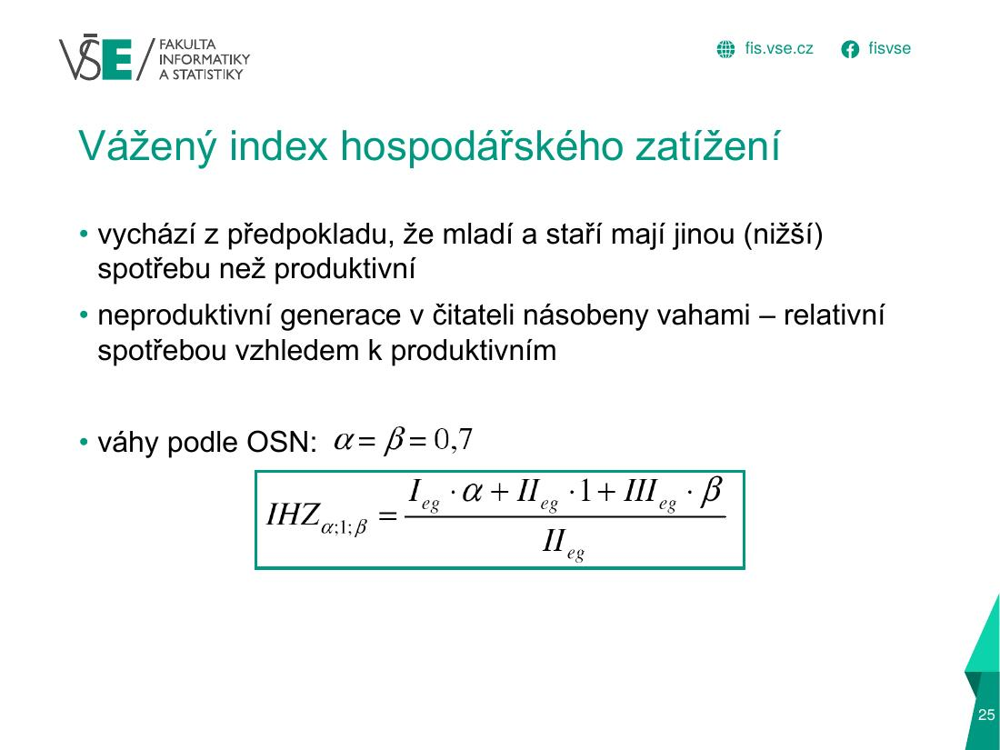
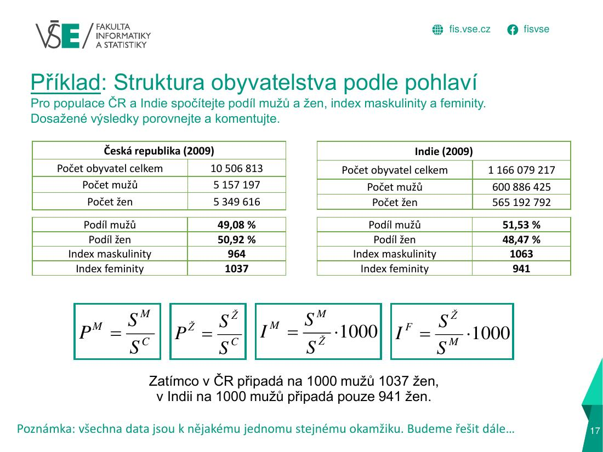
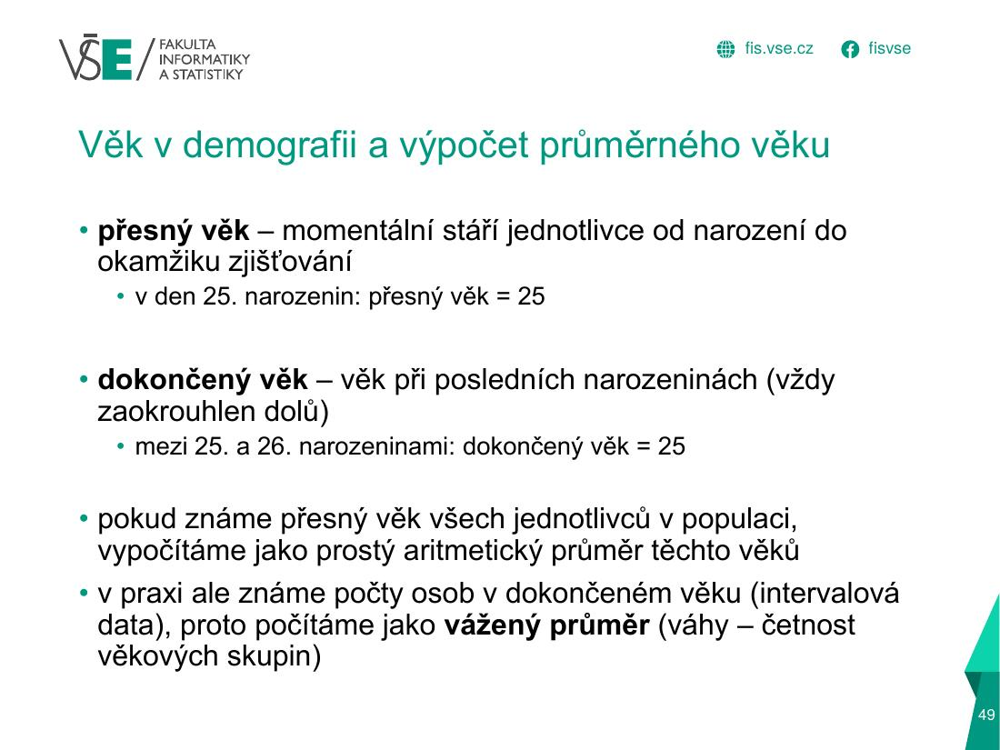
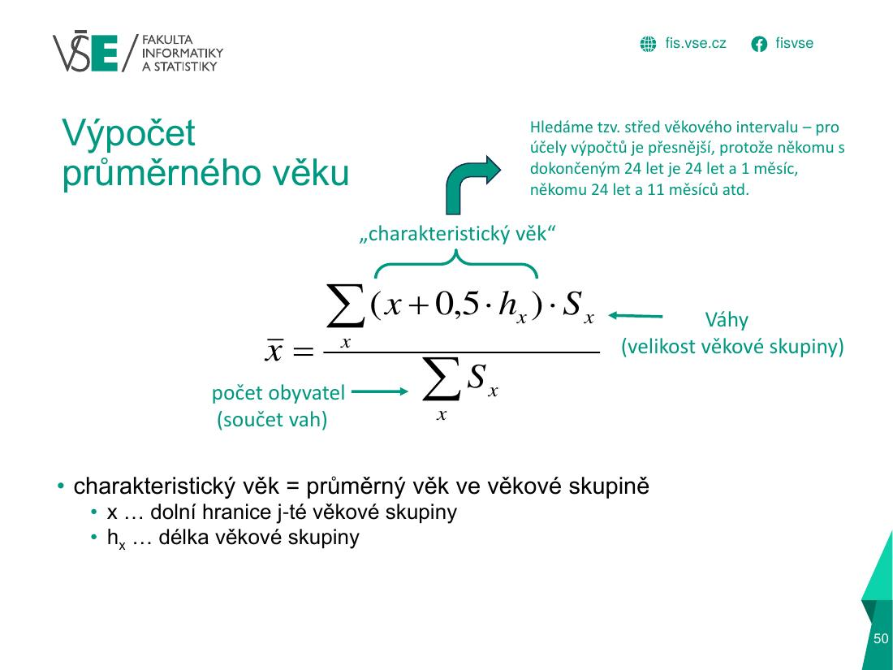
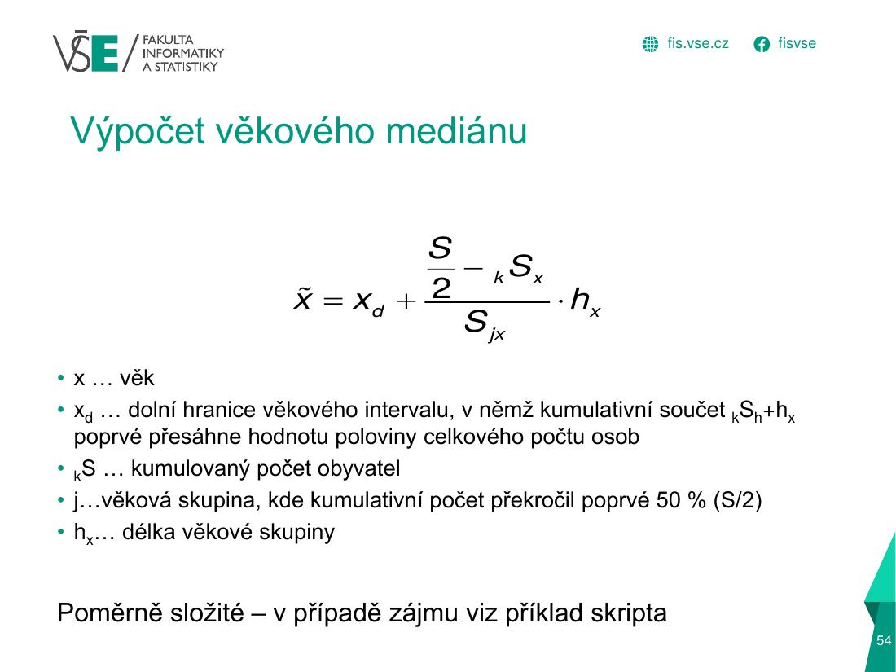

A) Indexy věkové strukturyÚloha 1 · 4 b
Logika v kostce
1 · Teorie a vzorce – přímo ze slidů








2 · Graficky: jak se to počítá
Dvě „krájení“ stejné populace
Každý index je jen podíl dvou barevných úseků. Níže vidíš u každého indexu dvě tyčky – nahoře čitatel, dole jmenovatel – a výsledek vpravo říká, kolikrát je horní tyčka delší než dolní.
Index stáří = 65+ ÷ 0–14
Sauvyho index stáří = 50+ ÷ 0–14
Index hospodářského zatížení = celkem ÷ 20–64
Index závislosti mladých = 0–19 ÷ 20–64
Index závislosti starých = 65+ ÷ 20–64
Struktura podle pohlaví
ČR vs. Indie (slide 17)
Průměrný věk
3 · Jak to vypadá v Excelu (tvoje semestrální práce)
| A | B | C | |
|---|---|---|---|
| 5 | Věk | muže | ženy |
| ⋮ | … řádky 6–6 mají stejný vzorec (vyplněno dolů) … | ||
| 7 | 0 | 415 | 412 |
| 8 | 1 | 438 | 400 |
| 9 | 2 | 507 | 469 |
| 10 | 3 | 547 | 532 |
| 11 | 4 | 588 | 568 |
| ⋮ | … řádky 12–106 mají stejný vzorec (vyplněno dolů) … | ||
| 107 | 100+ | 1 | 7 |
- Sloupec B a C (počet mužů a žen po jednom roce věku) se nenapisuje ručně – přebírá se z listu Data věkové složení, např.
B7 = 'Data věkové složení'!C13. Řádek 7 = věk 0, řádek 8 = věk 1 … řádek 107 = věk 100+ → věk x leží na řádku 7 + x. - Nejdřív si vždy ověř, že souhlasí součet (celkem ČR/kraj/okres) s původní tabulkou.
| I | J | K | |
|---|---|---|---|
| 4 | Muži | Ženy | |
| 5 | Biologické generace | ||
| 6 | |||
| 7 | I. biologická generace (0-14) | 8 430 | 7 927 |
| 8 | II. biologická generace (15-49) | 23 742 | 21 533 |
| 9 | III. biologická generace (50+) | 20 922 | 23 979 |
| 10 | |||
| 11 | Ekonomické generace | ||
| 12 | |||
| 13 | I. ekonomická generace (0-19) | 11 600 | 10 781 |
| 14 | II. ekonomická generace (20-64) | 31 336 | 29 341 |
| 15 | III. ekonomická generace (65+) | 10 762 | 13 974 |
| 16 | |||
| 17 | Ukazatele demografické struktury | ||
| 18 | Index stáří (65+/0-14) | 1,27663 | 1,76284 |
| 19 | Sauvyho index stáří (50+/0-14) | 2,48185 | 3,02498 |
| 20 | Index hospodářského zatížení | 1,71362 | 1,8437 |
| 21 | Index závislosti mladých (zelené… | 0,37018 | 0,36744 |
| 22 | Index závislosti starých (šedé z… | 0,34344 | 0,47626 |
| 23 | Vážený index hospodářského zatíž… | 1,49953 | 1,59059 |
- Biologické generace:
J7 =SUM(B7:B21)(věk 0–14 = řádky 7–21),J8 =SUM(B22:B56)(15–49),J9 =SUM(B57:B107)(50+). - Ekonomické generace:
J13 =SUM(B7:B26)(0–19),J14 =SUM(B27:B71)(20–64),J15 =SUM(B71:B107)(65+). - Indexy:
J18 =J15/J7(stáří),J19 =J9/J7(Sauvy),J20 =(J13+J15+J14)/J14(hospodářské zatížení),J21 =J13/J14,J22 =J15/J14,J23 =(J13*0,7+J14*1+J15*0,7)/J14(vážený). - Sloupec J = muži, K = ženy; stejné vzorce, jen s jiným sloupcem dat.
=SUM(B71:B107) začíná na řádku 71, což je věk 64. Věk 65 je až na řádku 72, takže 64letí se počítají dvakrát (v II. i III. ekonomické generaci). Správně: =SUM(B72:B107). Opraví se tím i index stáří, hospodářské zatížení a závislost starých.| I | J | K | |
|---|---|---|---|
| 25 | Ukazatel průměrný věk | 42,20707 | 45,17191 |
| M | N | O | |
|---|---|---|---|
| 5 | Věk - střed intervalu | Muži | Ženy |
| 6 | (x+0,5.hx).SxM | (x+0,5.hx).SxŽ | |
| 7 | 0,5 | 207,50 | 206 |
| 8 | 1,5 | 657 | 600 |
| 9 | 2,5 | 1 267,50 | 1 172,50 |
| ⋮ | … řádky 10–105 mají stejný vzorec (vyplněno dolů) … | ||
| 106 | 99,5 | 199 | 597 |
| 107 | 100,50 | 100,50 | 703,50 |
- Průměrný věk = vážený průměr středů intervalů:
M7 =A7+0,5(střed roku věku),N7 =M7*B7(střed × počet),J25 =SUM(N7:N107)/SUM(B7:B107). - Poslední skupina „100+“ nemá střed, proto je zadaná ručně
M107 = 100,5.
4 · Doplňky z přednášek
Další vzorce z přednášek (méně časté, ale mohou být v teorii)
5 · Doplňující text, tabulky a časté chyby
Rozbalit textový výklad (pro kontrolu a opakování)
| Index | Vzorec | Co znamená |
|---|---|---|
| Sauvyho index stáří | IIIbg (50+) / Ibg (0–14) | osob 50+ na 1 dítě 0–14 |
| Index stáří | IIIeg (65+) / Ibg (0–14) | seniorů 65+ na 1 dítě 0–14 (×100 = na 100 dětí) |
| Index hospodářského zatížení | (Ieg + IIeg + IIIeg) / IIeg | kolik lidí (i sebe) „uživí“ 1 produktivní |
| Index závislosti mladých (zelené zatížení) | Ieg / IIeg | dětí 0–19 na 1 produktivního |
| Index závislosti starých (šedé zatížení) | IIIeg / IIeg | seniorů na 1 produktivního |
| Vážený index zatížení | (0,7·Ieg + IIeg + 0,7·IIIeg) / IIeg | totéž, ale mladí a staří spotřebují méně (váha 0,7 OSN) |
Vyřešený příklad – indexy (zkus nejdřív sám)
Zadání (vzorový příklad č. 1 z dokumentu): biologické generace I = 40 033, II = 90 093, III = 58 813; ekonomické generace I = 49 767, II = 110 625, III = 28 547 (celkem 188 939). Dopočítej všech 6 indexů, váha 0,7.
| Index | Dosazení | Výsledek |
|---|---|---|
| Index stáří | 28 547 / 40 033 | 0,713087 |
| Sauvy | 58 813 / 40 033 | 1,469113 |
| Hosp. zatížení | 188 939 / 110 625 | 1,707923 |
| Závislost mladých | 49 767 / 110 625 | 0,449871 |
| Závislost starých | 28 547 / 110 625 | 0,258052 |
| Vážený | (0,7·49 767 + 110 625 + 0,7·28 547) / 110 625 | 1,495546 |
Interpretace (piš do testu): index stáří 0,71 = na 100 dětí do 14 let připadá 71 seniorů 65+. Index hospodářského zatížení 1,71 = jeden člověk v produktivním věku „živí“ sebe a dalších 0,71 osoby. Po zohlednění nižší spotřeby mladých a starých (váha 0,7) je zatížení nižší: 1,50.
Struktura podle pohlaví
index maskulinity IM = SM / SŽ · 1000 (mužů na 1000 žen)
index feminity IF = SŽ / SM · 1000 (žen na 1000 mužů)
Vyřešený příklad – ČR a Indie 2009 (slide 17)
| Česká republika | Indie | |
|---|---|---|
| Podíl mužů | 49,08 % | 51,53 % |
| Podíl žen | 50,92 % | 48,47 % |
| Index maskulinity | 964 | 1 063 |
| Index feminity | 1 037 | 941 |
Interpretace: v ČR připadá na 1000 mužů 1037 žen (převaha žen), v Indii jen 941 žen na 1000 mužů (převaha mužů). Příčiny: v ČR mužská nadúmrtnost ve vyšším věku; v Indii nižší podíl žen kvůli jejich vyšší úmrtnosti/preferenci chlapců a nižší naději dožití žen.
Doplněk: při narození se rodí 1050–1060 chlapců na 1000 děvčat; od cca 45 let převažují ženy (vyšší úmrtnost mužů, vyšší saldo zahraniční migrace mužů).
Průměrný věk (a medián)
x = dolní hranice skupiny, h = délka skupiny, x + 0,5·h = střed intervalu (charakteristický věk). Je to vážený průměr, kde váhy jsou počty osob. Medián (jen pro představu): x̃ = xd + (S/2 − kS)/Sj · h – věk, který dělí populaci na dvě poloviny.
Vyřešený příklad – průměrný věk žen 20–39 let
| Věk | Střed x+0,5h | Sx | (x+0,5h)·Sx |
|---|---|---|---|
| 20–24 | 22,5 | 7 622 | 171 495 |
| 25–29 | 27,5 | 8 964 | 246 510 |
| 30–34 | 32,5 | 12 063 | 392 048 |
| 35–39 | 37,5 | 14 953 | 560 738 |
| Celkem | 43 602 | 1 370 790 |
x̄ = 1 370 790 / 43 602 = 31,4 let
Interpretace: průměrný věk žen v této skupině je 31,4 roku (vychází i blízko středu intervalu 20–39 = 30, protože jsou početnější starší ročníky).